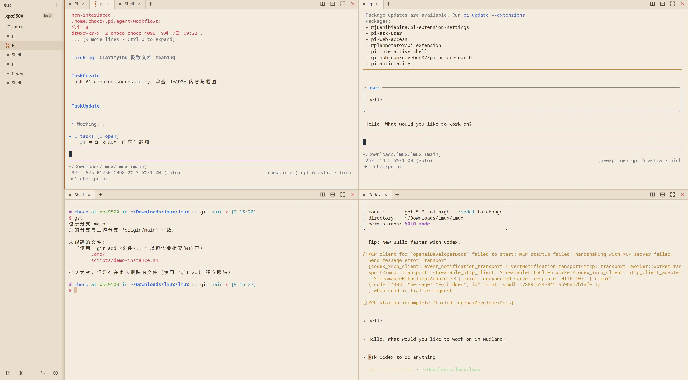
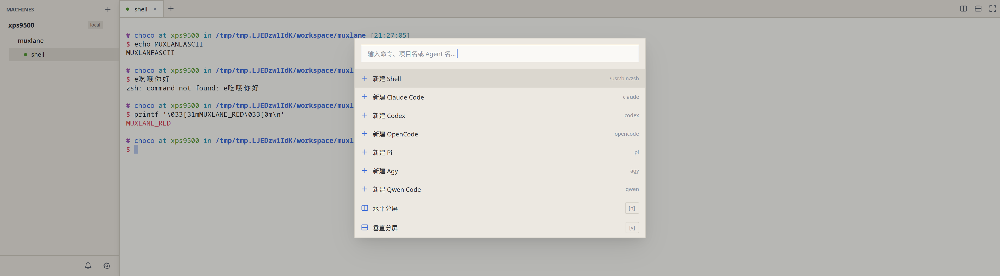
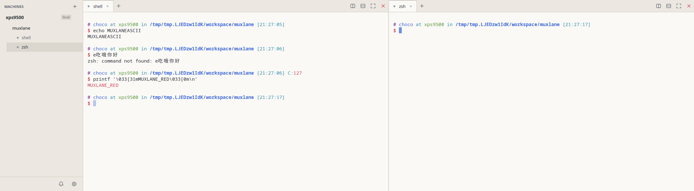

将本地与 SSH 远端的项目、终端和 AI Coding Agent 会话集中在一个界面里。多个任务并排运行，随时查看进度、切换上下文、处理通知。

Shell、Claude Code、Codex、Pi、OpenCode、Qwen……按机器和项目组织，并行推进。
通过命令面板（Super/⌘ + K）选择项目和终端预设，多个 Agent 同时运行在不同标签页、分屏或独立窗口中。
递归左右、上下分屏，拖动调整比例，专注模式最大化单个窗格；布局与比例随工作区保存。
会话可弹出为真正的系统窗口，跨屏、Alt-Tab 交给窗口管理器；关闭窗口即收回主窗口，后台任务继续运行。
通过 Agent Hook 接收执行中、等待输入、任务完成等状态，集中查看并点击跳转到对应会话。
会话由独立 tmux 服务承载。退出应用后台继续运行，再次打开时恢复存活的会话并回填终端输出。
连接远端 Muxlane 服务，在本机统一管理远端项目与会话；支持环境探测、确认后部署、断线缓存与重连。
在普通 Shell 会话里手动运行 Pi、Codex、Claude Code 等命令时，会话自动切换为对应 Agent 的标题、状态检测规则和通知。

由 portable-pty 与 alacritty_terminal 驱动，跑日常 Shell 和全屏 TUI 都没问题。

从源码构建，或使用 Release 包中的安装脚本。会话运行依赖 tmux。
需要 Rust 工具链（rust-toolchain.toml 已锁定版本）。
安装脚本会放置二进制、桌面入口与图标。
Super/⌘ + K 打开命令面板，选项目和预设开跑。
# 克隆并构建 git clone https://github.com/chocotan/muxlane.git cd muxlane cargo build --release # 安装（默认 ~/.local，可用 PREFIX 覆盖） ./packaging/install.sh # 运行；无桌面环境可用 Headless 模式 muxlane muxlane --headless
手机不跑 Agent。电脑主动连你自己部署的中继，手机扫码配对后即可看会话树、开终端、输入、收通知。
# 在 VPS 或本机启动中继（官方不托管） MUXLANE_RELAY_TOKEN=your-relay-secret cargo run -p muxlane-relay -- 0.0.0.0:9843 # Headless 机器接入中继 muxlane --headless --relay ws://127.0.0.1:9843
桌面之间也可以走中继互连（家 ↔ 公司、临时机器），不配 SSH 也能用。